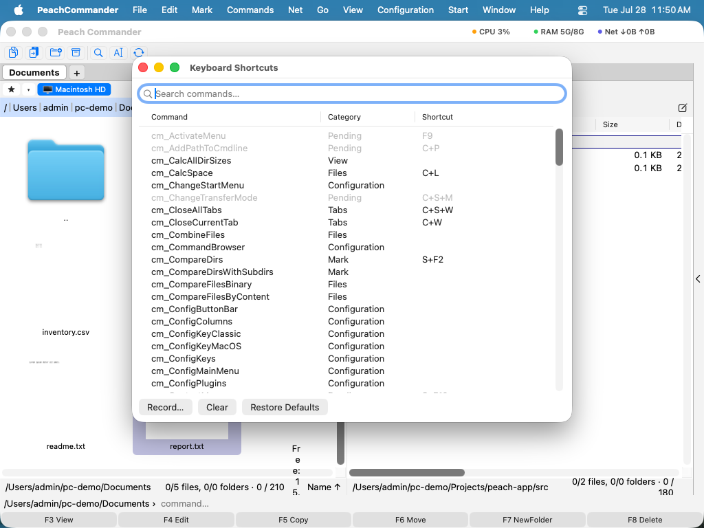
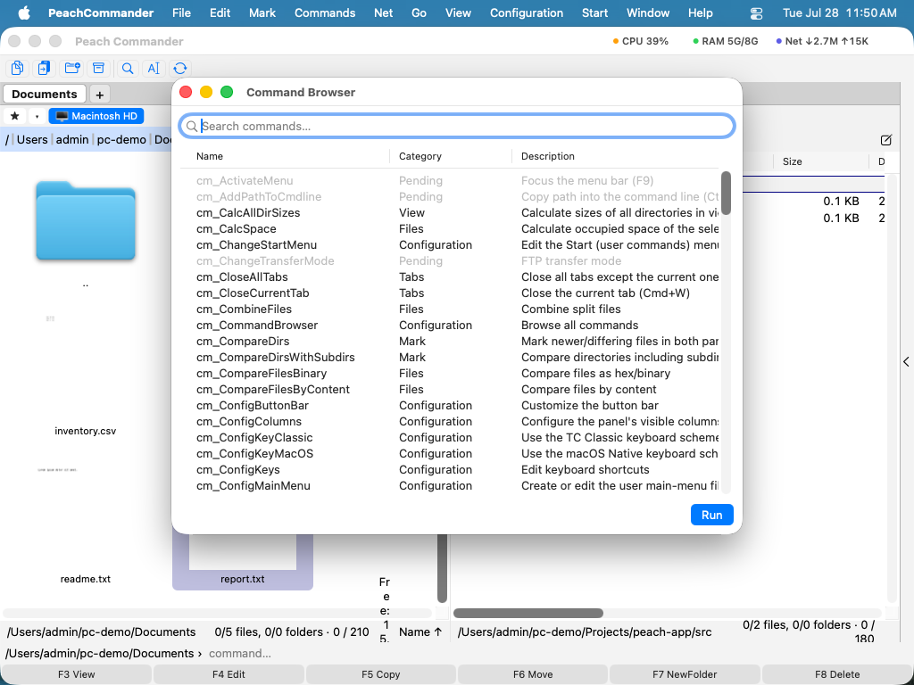

Клавиатура и сочетания клавиш
Peach Commander создан для управления с клавиатуры. Он поставляется с двумя готовыми схемами сочетаний и позволяет переназначить любую команду на предпочитаемые вами клавиши. Если вы пришли из классического двухпанельного файлового менеджера, вы можете сохранить уже знакомые клавиши; если вы предпочитаете привычные комбинации Mac, переключитесь на схему macOS одним щелчком. Обозреватель команд с поиском позволяет открыть для себя всё, что умеет приложение, и выполнить любую команду по имени.
Переключение схем клавиатуры
- Откройте Настройки (Cmd+, или Конфигурация > Настройки…) и выберите страницу Клавиатура.
- Выберите схему в меню Схема: - Total Commander (классический) (по умолчанию) сохраняет традиционные клавиши с комбинациями на основе Ctrl, такими как Ctrl+R для обновления панели. - macOS сопоставляет те же действия с привычными клавишами Mac, где это имеет смысл, например Cmd+C для копирования файлов и Cmd+F для поиска.
- Изменение вступает в силу немедленно во всех меню и на полосе сочетаний. Кнопка Редактировать сочетания клавиш… находится сразу под ним, потому что отдельные переназначения накладываются поверх выбранной вами схемы.
Настройка сочетаний клавиш
- Выберите Конфигурация > Редактировать сочетания клавиш… или щёлкните Редактировать сочетания клавиш… на странице «Клавиатура» в настройках.
- Найдите команду с помощью поля поиска, затем выберите её строку.
- Щёлкните Записать… и нажмите нужную комбинацию клавиш. Она назначается сразу.
- Если эта комбинация уже использовалась другой командой, уведомление сообщит, у какой команды она была отобрана.
- Используйте Очистить, чтобы удалить сочетание команды, или Восстановить значения по умолчанию, чтобы отменить все ваши изменения и вернуться к исходным клавишам схемы.

(Рис.: Найдите команду, затем используйте «Записать», «Очистить» или «Восстановить значения по умолчанию», чтобы изменить её сочетание.)Обзор всех команд
- Выберите Конфигурация > Обозреватель команд….
- Вводите текст в поле поиска для фильтрации по имени, категории или описанию.
- Дважды щёлкните команду или выберите её и щёлкните Запустить, чтобы выполнить её на активной панели.

(Рис.: Все команды в одном списке с поиском, с кратким описанием каждой.)Сочетания клавиш
| Действие | Путь меню |
|---|---|
| Выбрать схему | Настройки > Клавиатура > Схема |
| Редактировать сочетания | Конфигурация > Редактировать сочетания клавиш… |
| Обзор всех команд | Конфигурация > Обозреватель команд… |
| Обновить активную панель | F2 (также Ctrl+R) |
Примечания
- Ваши пользовательские сочетания сохраняются автоматически и накладываются поверх активной схемы. Переключение схем сохраняет ваши личные переопределения.
- Команды, недоступные в текущем контексте, отображаются приглушёнными как в редакторе сочетаний, так и в обозревателе команд.
- Чтобы использовать функциональные клавиши (F1–F12) напрямую, включите Использовать клавиши F1, F2 и т. д. как стандартные функциональные клавиши в Системных настройках > Клавиатура. Иначе удерживайте клавишу Fn вместе с функциональной клавишей.